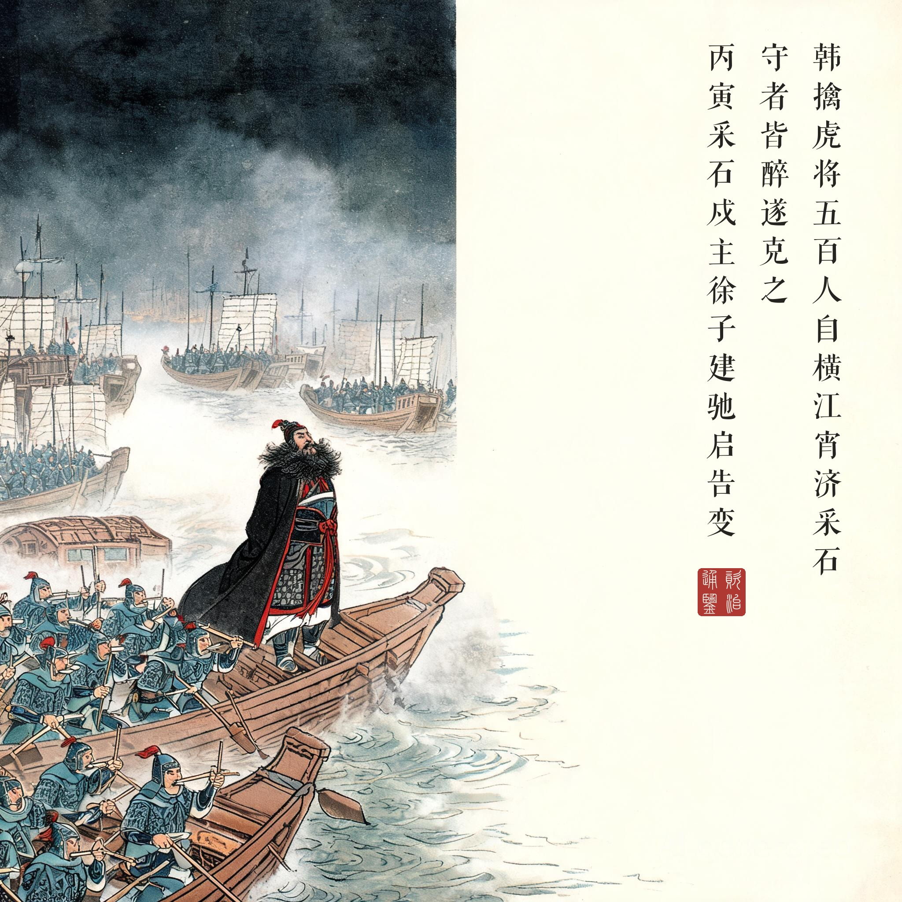
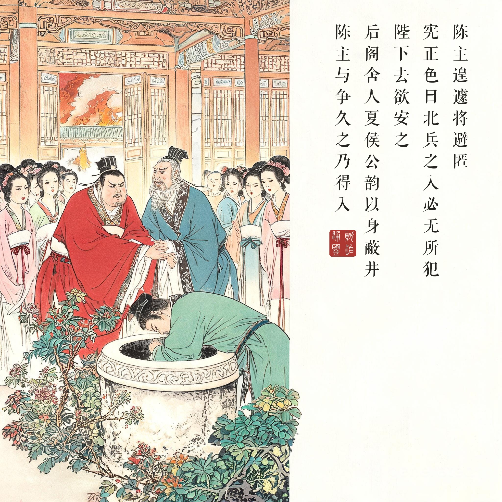
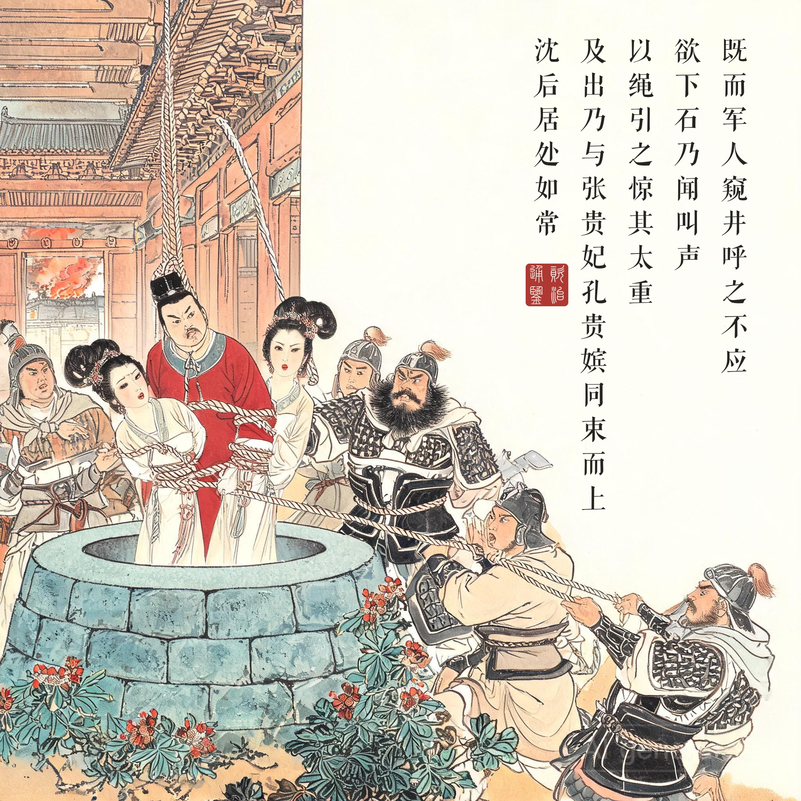
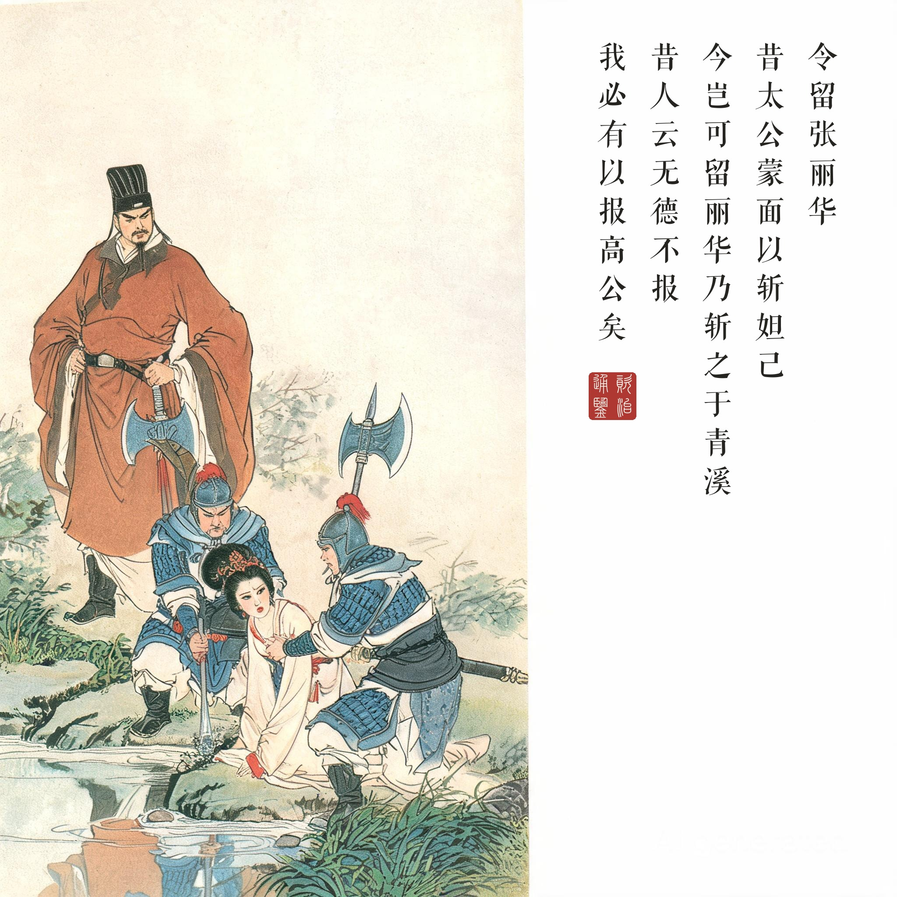

《资治通鉴 · 卷第一百七十七 · 隋纪一》高祖文皇帝上之上开皇九年（公元 589 年）
（据 daizhigev20《资治通鉴》底本节录。前情：开皇八年冬隋军大举伐陈，此卷正月渡江）
韩擒虎将五百人自横江宵济采石，守者皆醉，遂克之。丙寅，采石戍主徐子建驰启告变；丁卯，召公卿入议军旅。……（建康城破）陈主遑遽，将避匿，宪正色曰：“北兵之入，必无所犯。大事如此，陛下去欲安之！臣愿陛下正衣冠，御正殿，依梁武帝见侯景故事。”陈主不从，下榻驰去，曰：“锋刃之下，未可交当，吾自有计！”从宫人十馀出后堂景阳殿，将自投于井，宪苦谏不从；后阁舍人夏侯公韵以身蔽井，陈主与争，久之，乃得入。既而军人窥井，呼之，不应，欲下石，乃闻叫声；以绳引之，惊其太重，及出，乃与张贵妃、孔贵嫔同束而上。沈后居处如常。太子深年十五，闭邠而坐，舍人孔伯鱼侍侧，军士叩阁而入，深安坐，劳之曰：“戎旅在途，不至无礼。”……高颎先入建康，颎子德弘为晋王广记室，广使德弘驰诣颎所，令留张丽华，颎曰：“昔太公蒙面以斩妲己，今岂可留丽华！”乃斩之于青溪。德弘还报，广变色曰：“昔人云，‘无德不报’，我必有以报高公矣！”由是恨颎。
韩擒虎率五百人从横江连夜渡过采石，守军都醉了，于是攻取了它。丙寅日，采石戍主徐子建飞报告变；丁卯日，朝廷召公卿商议军务。……（建康城破）陈主惊慌失措，想躲藏起来，袁宪正色说：“北方军队进城，一定不会有所冒犯。大事已到这般地步，陛下要躲到哪里去！臣愿陛下端正衣冠，驾临正殿，学梁武帝见侯景的先例。”陈主不听，下了坐榻跑出去，说：“刀锋之下，硬碰不得，我自有办法！”带着十多个宫人出后堂到景阳殿，要投井，袁宪苦苦劝谏不听；后阁舍人夏侯公韵用身体挡住井口，陈主跟他争抢，争了很久，才跳了进去。之后隋军军士窥探井口，喊话，没人答应，要往下扔石头，才听到叫声；用绳子往上拉，惊讶怎么这么重，等拉出来，是陈主和张贵妃、孔贵嫔三个人捆在一起上来的。沈后处之如常。太子陈深十五岁，关门端坐，舍人孔伯鱼陪在旁边，军士敲门进来，陈深安坐不动，慰劳他们说：“行军途中，不至于无礼。”……高颎先入建康，高颎的儿子德弘是晋王杨广的记室，杨广派德弘驰马到高颎处，命令留下张丽华，高颎说：“当年姜太公蒙着面斩妲己，如今岂能留下丽华！”就在青溪斩了她。德弘回报，杨广变了脸色说：“古人说‘无德不报’，我必定有用来报答高公的！”从此恨上了高颎。
一口井的视觉政治。亡国叙事往往靠大场面（火烧、巷战、坠城），《通鉴》选的是一口井。这个选择的狠处在于角度：全回最深刻的一帧不是隋军入城，而是“以绳引之，惊其太重”——一个不知情的士兵感受到的重量。皇帝的尊严、王朝的体统、与美人同束的狼狈，全部压缩成一根绷紧的绳。读画人看第三幕：井下三个人的命运捆在一根绳上，而井口的士兵只关心“怎么这么重”——历史在场者对历史的无知，正是历史讽刺的核心。
三个人的三种体面。陈主跳井（无体面），沈后居处如常（最大的体面），十五岁的太子陈深安坐劳军（最小的体面却最动人）——“戎旅在途，不至无礼”，一个少年用一句得体的话护住了自己。还有第四种：袁宪与夏侯公韵，臣子的体面——劝皇帝坐正殿的是他们，用身体挡井口的也是他们。司马光把这一群人的选择并置成对照表：同一场亡国，体面从来不是身份给的，是行为给的。
青溪边的第二场杀戮。张丽华没有死在井边，死在青溪——而决定她死活的是一场权力的试探：杨广想留她（美色），高颎要斩她（典故与军纪），太公蒙面斩妲己的引经据典成了杀一个女人的刀。杨广那句“我必有以报高公矣”是本回埋给后世的雷：这个人连恨都要说得冠冕堂皇。看画注意第四幕的构图：高颎按剑而立、丽华素服跪于溪畔——画面停在下令的一刻，不画行刑，是这个系列一贯的分寸。